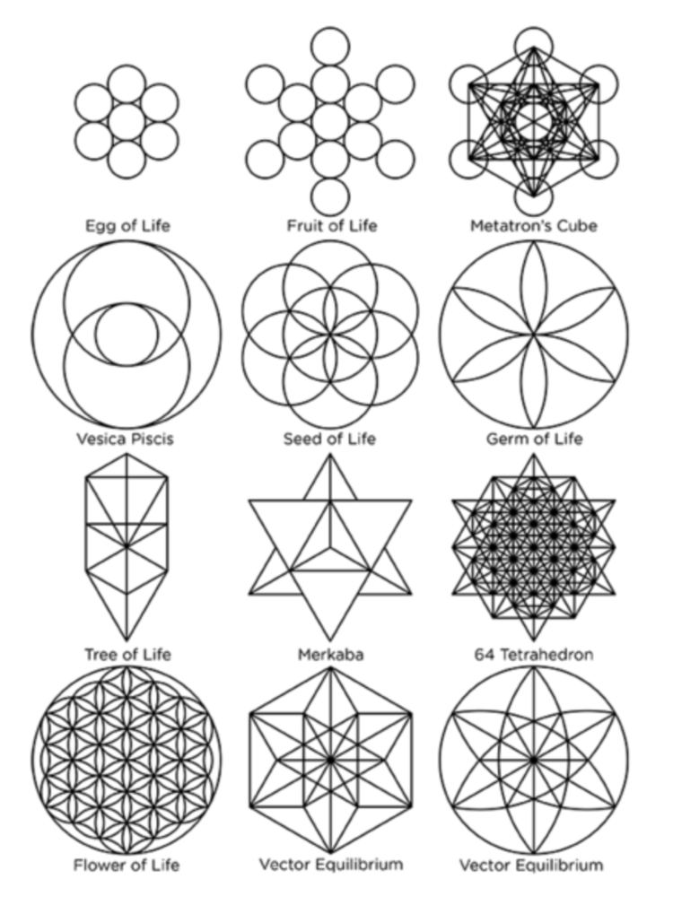

|  |
Brandon "Bil1lion" CasillasFather and Aspiring Full Stack Developer I've worked many jobs in my life. Mostly restaurants due to the flexibility in time and good money. But those jobs always failed to leave me feeling fulfilled. I was always seeking to more for my life. That's when I got introduced to the world of IT, specifically becoming a Full Stack Developer. The idea that I could create something out of nothing simply fascinated me. So I decided to try my hand at a course by Angela Yu offered at Udemy.com |
Currently I am taking "The Complete 2022 Web Development Bootcamp", by Angela Yu. I have also purchased "100 Days of Code: The Complete Python Pro Bootcamp for 2022" also by Angela Yu, which I intend to complete after finishing her Web Development course.
My hobbies include learning to program, watching my favorite Animes, learning about the universe, and learning about the power of the mind.
Link To: Contact Me
|
|